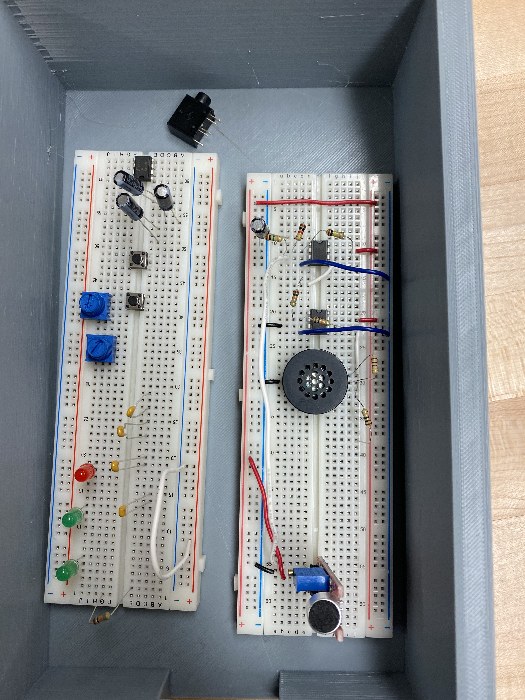

ENEL300 Project

In ENEL300, we were split into random teams and worked together to build an audio product using the concepts we learned from other courses. My group made a noise cancelling module for headphones. Above is an image of our first prototype of the circuit.
The most challenging part of this project was communication and teamwork. However, we managed all of our organizational work through the Scrum process. This facilitated collaboration and allowed us to work more effectively as a team.
Furthermore, the technical aspect of the project was particularly challenging, but our team wasn't afraid to ask for help and took advantage of the teaching team's expertise.
At first, we wanted to make area wide noise cancellation that didn't need headphones. However, we realized that the technical difficulty of this was not appropriate for our project and decided on a simple analog noise cancellation circuit. Later, we decided to add music and user controls using the AVR128DB28 chip.
This course helped me improve my teamwork and communication skills. I also learned Scrum to facilitate the agile design process.